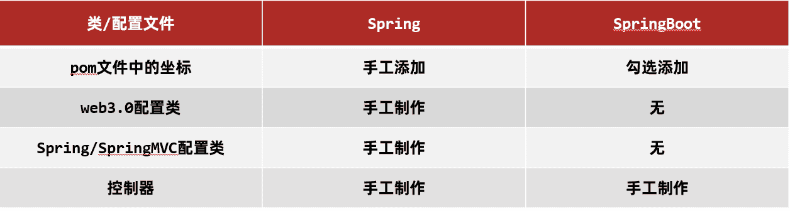
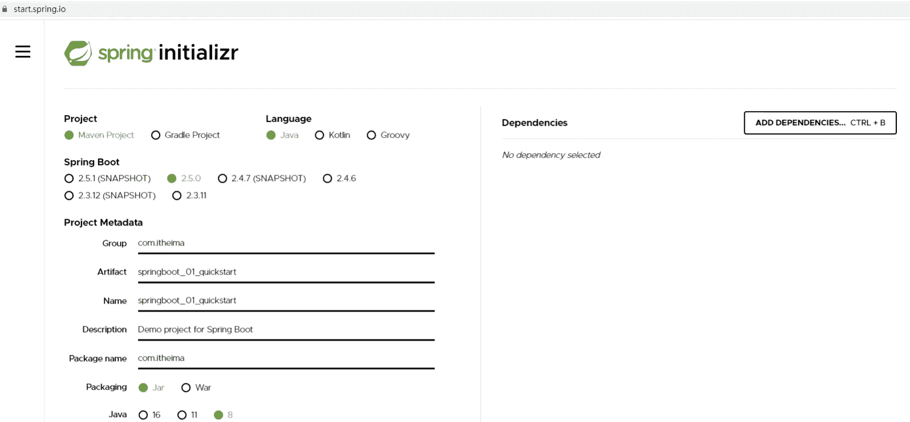
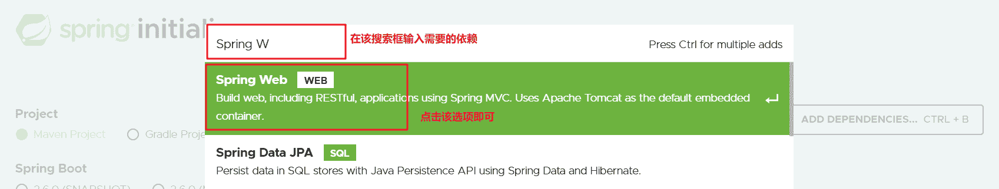
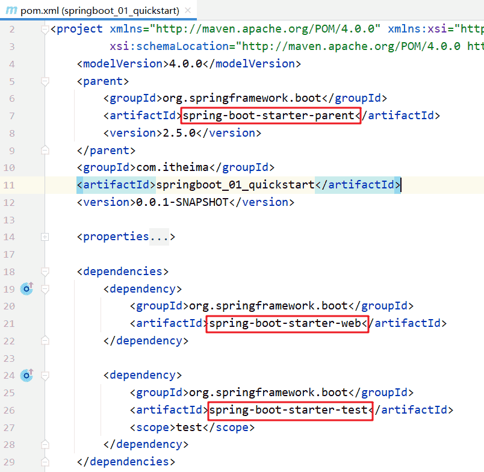
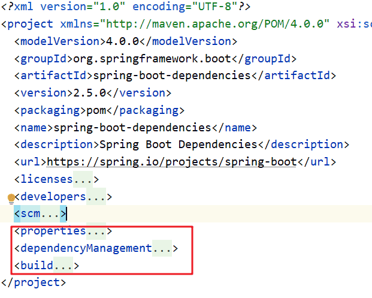
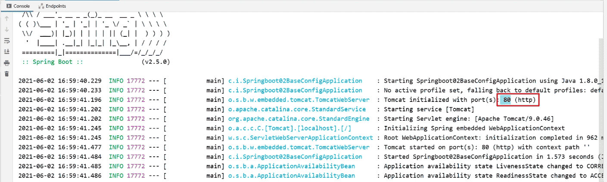
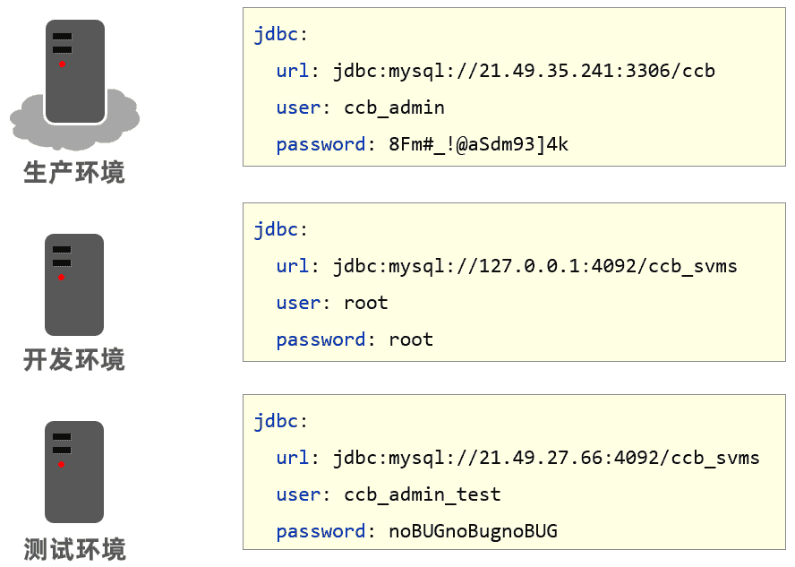
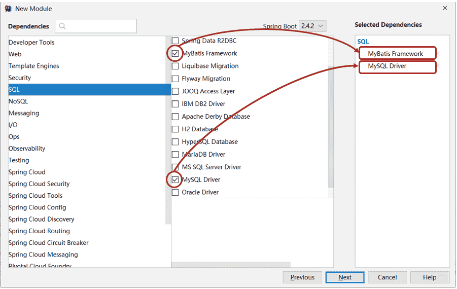

SpringBoot
SpringBoot
1. SpringBoot简介
SpringBoot 是由 Pivotal 团队提供的全新框架，其设计目的是用来简化 Spring 应用的初始搭建以及开发过程。
使用了 Spring 框架后已经简化了的开发。而 SpringBoot 又是对 Spring 开发进行简化的，可想而知 SpringBoot 使用的简单及广泛性。既然 SpringBoot 是用来简化 Spring 开发的，那就先回顾一下，以 SpringMVC 开发为例：
-
创建工程，并在
pom.xml配置文件中配置所依赖的坐标1
2
3
4
5
6
7
8
9
10
11
12
13
14
15<dependencies>
<dependency>
<groupId>org.springframework</groupId>
<artifactId>spring-webmvc</artifactId>
<version>5.2.10.RELEASE</version>
</dependency>
<dependency>
<groupId>javax.servlet</groupId>
<artifactId>javax.servlet-api</artifactId>
<version>3.1.0</version>
<scope>provided</scope>
</dependency>
</dependencies> -
编写
web3.0的配置类作为
web程序，web3.0的配置类不能缺少，而这个配置类还是比较麻烦的，代码如下1
2
3
4
5
6
7
8
9
10
11
12
13
14
15
16
17
18
19
20
21public class ServletConfig extends AbstractAnnotationConfigDispatcherServletInitializer {
//加载Spring配置类
protected Class<?>[] getRootConfigClasses() {
return new Class[]{SpringConfig.class};
}
//加载SpringMVC配置类
protected Class<?>[] getServletConfigClasses() {
return new Class[]{SpringMvcConfig.class};
}
//设置SpringMVC请求地址拦截规则
protected String[] getServletMappings() {
return new String[]{"/"};
}
//设置post请求中文乱码过滤器
@Override
protected Filter[] getServletFilters() {
CharacterEncodingFilter filter = new CharacterEncodingFilter();
filter.setEncoding("utf-8");
return new Filter[]{filter};
}
} -
编写
SpringMVC的配置类1
2
3
4
5@Configuration
@ComponentScan("com.itheima.controller")
@EnableWebMvc
public class SpringMvcConfig {
}
做到这只是将工程的架子搭起来。要想被外界访问，最起码还需要提供一个 Controller 类，在该类中提供一个方法。
-
编写
Controller类1
2
3
4
5
6
7
8
9
10
11
12
13
14
15
16
17@RestController
@RequestMapping("/books")
public class BookController {
@Autowired
private BookService bookService;
@GetMapping("/{id}")
public Result getById(@PathVariable Integer id) {
Book book = bookService.getById(id);
Integer code = book != null ? Code.GET_OK : Code.GET_ERR;
String msg = book != null ? "" : "数据查询失败，请重试！";
return new Result(code,book,msg);
}
}
从上面的 SpringMVC 程序开发可以看到，前三步都是在搭建环境，而且这三步基本都是固定的。SpringBoot 就是对这三步进行简化了。接下来通过一个入门案例来体现 SpingBoot 简化 Spring 开发。
1.1 SpringBoot快速入门
1.1.1 开发步骤
具体创建步骤参考网上教程
SpringBoot 开发起来特别简单，分为如下几步：
- 创建新模块，选择Spring初始化，并配置模块相关基础信息
- 选择当前模块需要使用的技术集
- 开发控制器类
- 运行自动生成的Application类
知道了 SpringBoot 的开发步骤后，接下来进行具体的操作
1.1.1.1 创建新模块
-
点击
+选择New Module创建新模块 -
选择
Spring Initializr，用来创建SpringBoot工程以前选择的是
Maven，今天选择Spring Initializr来快速构建SpringBoot工程。而在Module SDK这一项选择安装的JDK版本。 -
对
SpringBoot工程进行相关的设置使用这种方式构建的
SpringBoot工程其实也是Maven工程，而该方式只是一种快速构建的方式而已。注意：打包方式这里需要设置为
Jar -
选中
Web，然后勾选Spring Web由于需要开发一个
web程序，使用到了SpringMVC技术，所以按照下图红框进行勾选 -
下图界面不需要任何修改，直接点击
Finish完成SpringBoot工程的构建
经过以上步骤后就创建了如下结构的模块，它会帮自动生成一个 Application 类，而该类一会再启动服务器时会用到
1 | ├─ src |
注意：
在创建好的工程中不需要创建配置类
创建好的项目会自动生成其他的一些文件，而这些文件目前对来说没有任何作用，所以可以将这些文件删除。
可以删除的目录和文件如下：
.mvn.gitignoreHELP.mdmvnwmvnw.cmd
1.1.1.2 创建 Controller
在 com.itheima.controller 包下创建 BookController ，代码如下：
1 |
|
1.1.1.3 启动服务器
运行 SpringBoot 工程不需要使用本地的 Tomcat 和 插件，只运行项目 com.itheima 包下的 Application 类即可运行。
1.1.1.4 进行测试
使用 Postman 工具来测试的程序
通过上面的入门案例可以看到使用 SpringBoot 进行开发，使整个开发变得很简单，那它是如何做到的呢？
要研究这个问题，需要看看 Application 类和 pom.xml 都书写了什么。先看看 Applicaion 类，该类内容如下：
1 |
|
这个类中的东西很简单，就在类上添加了一个 @SpringBootApplication 注解，而在主方法中就一行代码。在启动服务器时就是执行的该类中的主方法。
再看看 pom.xml 配置文件中的内容
1 |
|
代码之所以能简化，就是因为指定的父工程和 Spring Web 依赖实现的。具体的后面在聊。
1.1.2 对比
做完 SpringBoot 的入门案例后，接下来对比一下 Spring 程序和 SpringBoot 程序。如下图

-
坐标
Spring程序中的坐标需要自己编写，而且坐标非常多SpringBoot程序中的坐标是在创建工程时进行勾选自动生成的 -
web3.0配置类
Spring程序需要自己编写这个配置类。这个配置类大家之前编写过，肯定感觉很复杂SpringBoot程序不需要自己书写 -
配置类
Spring/SpringMVC程序的配置类需要自己书写。而SpringBoot程序则不需要书写。
注意：基于Idea的
Spring Initializr快速构建SpringBoot工程时需要联网。
1.1.3 官网构建工程
在入门案例中之所以能快速构建 SpringBoot 工程，是因为 Idea 使用了官网提供了快速构建 SpringBoot 工程的组件实现的。那如何在官网进行工程构建呢？通过如下步骤构建
1.1.3.1 进入SpringBoot官网
官网地址如下：
1 | https://spring.io/projects/spring-boot |
进入到 SpringBoot 官网后拖到最下方就可以看到如下内容
然后点击 Spring Initializr 超链接就会跳转到如下页面

这个页面内容是不是感觉很眼熟的，这和使用 Idea 快速构建 SpringBoot 工程的界面基本相同。在上面页面输入对应的信息
1.1.3.2 选择依赖
选择 Spring Web 可以点击上图右上角的 ADD DEPENDENCIES... CTRL + B 按钮，就会出现如下界面

1.1.3.3 生成工程
以上步骤完成后就可以生成 SpringBoot 工程了。在页面的最下方点击 GENERATE CTRL + 回车 按钮生成工程并下载到本地，如下图所示
打开下载好的压缩包可以看到工程结构和使用 Idea 生成的一模一样。
而打开 pom.xml 文件，里面也包含了父工程和 Spring Web 的依赖。
通过上面官网的操作，知道 Idea 中快速构建 SpringBoot 工程其实就是使用的官网的快速构建组件，那以后即使没有 Idea 也可以使用官网的方式构建 SpringBoot 工程。
1.1.4 SpringBoot工程快速启动
1.1.4.1 问题导入
以后和前端开发人员协同开发，而前端开发人员需要测试前端程序就需要后端开启服务器，这就受制于后端开发人员。为了摆脱这个受制，前端开发人员尝试着在自己电脑上安装 Tomcat 和 Idea ，在自己电脑上启动后端程序，这显然不现实。
后端可以将 SpringBoot 工程打成 jar 包，该 jar 包运行不依赖于 Tomcat 和 Idea 这些工具也可以正常运行，只是这个 jar 包在运行过程中连接和自己程序相同的 Mysql 数据库即可。这样就可以解决这个问题，如下图

那现在问题是如何打包呢？
1.1.4.2 打包
由于在构建 SpringBoot 工程时已经在 pom.xml 中配置了如下插件
1 | <plugin> |
所以只需要使用 Maven 的 package 指令打包就会在 target 目录下生成对应的 Jar 包。
注意：该插件必须配置，不然打好的
jar包也是有问题的。
1.1.4.3 启动
进入 jar 包所在位置，在 命令提示符 中输入如下命令
1 | java -jar springboot_01_quickstart-0.0.1-SNAPSHOT.jar |
执行上述命令就可以看到 SpringBoot 运行的日志信息
1.2 SpringBoot概述
SpringBoot 是由Pivotal团队提供的全新框架，其设计目的是用来简化Spring应用的初始搭建以及开发过程。
大家已经感受了 SpringBoot 程序，回过头看看 SpringBoot 主要作用是什么，就是简化 Spring 的搭建过程和开发过程。
原始 Spring 环境搭建和开发存在以下问题：
- 配置繁琐
- 依赖设置繁琐
SpringBoot 程序优点恰巧就是针对 Spring 的缺点
- 自动配置。这个是用来解决
Spring程序配置繁琐的问题 - 起步依赖。这个是用来解决
Spring程序依赖设置繁琐的问题 - 辅助功能（内置服务器,…）。在启动
SpringBoot程序时既没有使用本地的tomcat也没有使用tomcat插件，而是使用SpringBoot内置的服务器。
接下来来说一下 SpringBoot 的起步依赖
1.2.1 起步依赖
使用 Spring Initializr 方式创建的 Maven 工程的的 pom.xml 配置文件中自动生成了很多包含 starter 的依赖，如下图

这些依赖就是启动依赖，接下来探究一下他是如何实现的。
1.2.1.1 探索父工程
从上面的文件中可以看到指定了一个父工程，进入到父工程，发现父工程中又指定了一个父工程，如下图所示
1 | <parent> |
再进入到该父工程中，在该工程中可以看到配置内容结构如下图所示

上图中的 properties 标签中定义了各个技术软件依赖的版本，避免了在使用不同软件技术时考虑版本的兼容问题。在 properties 中找 servlet 和 mysql 的版本如下图
1 | <servlet-api.version>4.0.1</servlet-api.version> |
dependencyManagement 标签是进行依赖版本锁定，但是并没有导入对应的依赖；如果工程需要那个依赖只需要引入依赖的 groupid 和 artifactId 不需要定义 version。
而 build 标签中也对插件的版本进行了锁定，如下图
1 | <build> |
看完了父工程中 pom.xml 的配置后不难理解工程的的依赖为什么都没有配置 version。
1.2.1.2 探索依赖
在创建的工程中的 pom.xml 中配置了如下依赖
1 | <dependency> |
进入到该依赖，查看 pom.xml 的依赖会发现它引入了如下的依赖
1 | <dependency> |
里面的引入了 spring-web 和 spring-webmvc 的依赖，这就是为什么的工程中没有依赖这两个包还能正常使用 springMVC 中的注解的原因。
而依赖 spring-boot-starter-tomcat ，从名字基本能确认内部依赖了 tomcat，所以的工程才能正常启动。
结论：以后需要使用技术，只需要引入该技术对应的起步依赖即可
1.2.1.3 小结
starter
SpringBoot中常见项目名称，定义了当前项目使用的所有项目坐标，以达到减少依赖配置的目的
parent
-
所有
SpringBoot项目要继承的项目，定义了若干个坐标版本号（依赖管理，而非依赖），以达到减少依赖冲突的目的 -
spring-boot-starter-parent（2.5.0）与spring-boot-starter-parent（2.4.6）共计57处坐标版本不同
实际开发
-
使用任意坐标时，仅书写GAV中的G和A，V由SpringBoot提供
G：groupid
A：artifactId
V：version
-
如发生坐标错误，再指定version（要小心版本冲突）
1.2.2 程序启动
创建的每一个 SpringBoot 程序时都包含一个类似于下面的类，将这个类称作引导类
1 |
|
注意：
-
SpringBoot在创建项目时，采用jar的打包方式 -
SpringBoot的引导类是项目的入口，运行main方法就可以启动项目因为在
pom.xml中配置了spring-boot-starter-web依赖，而该依赖通过前面的学习知道它依赖tomcat，所以运行main方法就可以使用tomcat启动咱们的工程。
1.2.3 切换web服务器
现在启动工程使用的是 tomcat 服务器，那能不能不使用 tomcat 而使用 jetty 服务器，jetty 在 maven 高级时讲 maven 私服使用的服务器。而要切换 web 服务器就需要将默认的 tomcat 服务器给排除掉，怎么排除呢？使用 exclusion 标签
1 | <dependency> |
现在运行引导类可以吗？不可以，运行会失败。程序直接停止了，为什么呢？那是因为排除了 tomcat 服务器，程序中就没有服务器了。所以此时不光要排除 tomcat 服务器，还要引入 jetty 服务器。在 pom.xml 中因为 jetty 的起步依赖
1 | <dependency> |
接下来再次运行引导类，在日志信息中就可以看到使用的是 jetty 服务器
小结：
通过切换服务器，不难发现在使用 SpringBoot 换技术时只需要导入该技术的起步依赖即可。
2. 配置文件
2.1 配置文件格式
现在启动服务器默认的端口号是 8080，访问路径可以书写为
1 | http://localhost:8080/books/1 |
在线上环境还是希望将端口号改为 80，这样在访问的时候就可以不写端口号了，如下
1 | http://localhost/books/1 |
而 SpringBoot 程序如何修改呢？SpringBoot 提供了多种属性配置方式
-
application.properties1
server.port=80
-
application.yml1
2server:
port: 81 -
application.yaml1
2server:
port: 82
注意：
SpringBoot程序的配置文件名必须是application，只是后缀名不同而已。
2.1.1 环境准备
创建一个新工程 springboot_02_base_config 用来演示不同的配置文件，工程环境和入门案例一模一样。
在该工程中的 com.itheima.controller 包下创建一个名为 BookController 的控制器。内容如下：
1 |
|
2.1.2 不同配置文件演示
- application.properties配置文件
现在需要进行配置，配合文件必须放在 resources 目录下，而该目录下有一个名为 application.properties 的配置文件，就可以在该配置文件中修改端口号，在该配置文件中书写 port ，Idea 就会智能提示。
application.properties 配置文件内容如下：
1 | server.port=80 |
启动服务，会在控制台打印出日志信息，从日志信息中可以看到绑定的端口号已经修改了

- application.yml配置文件
删除 application.properties 配置文件中的内容。在 resources 下创建一个名为 application.yml 的配置文件，在该文件中书写端口号的配置项，格式如下：
1 | server: |
注意： 在
:后，数据前一定要加空格。
而在 yml 配置文件中也是有提示功能的，也可以在该文件中书写 port ，然后 idea 就会提示并书写成上面的格式
启动服务，可以在控制台看到绑定的端口号是 81
- application.yaml配置文件
删除 application.yml 配置文件和 application.properties 配置文件内容，然后在 resources 下创建名为 application.yaml 的配置文件，配置内容和后缀名为 yml 的配置文件中的内容相同，只是使用了不同的后缀名而已
application.yaml 配置文件内容如下：
1 | server: |
启动服务，在控制台可以看到绑定的端口号。
2.1.3 三种配合文件的优先级
在三种配合文件中分别配置不同的端口号，启动服务查看绑定的端口号。用这种方式就可以看到哪个配置文件的优先级更高一些
application.properties 文件内容如下：
1 | server.port=80 |
application.yml 文件内容如下：
1 | server: |
application.yaml 文件内容如下：
1 | server: |
启动服务，在控制台可以看到使用的端口号是 80。说明 application.properties 的优先级最高
注释掉 application.properties 配置文件内容。再次启动服务，在控制台可以看到使用的端口号是 81，说明 application.yml 配置文件为第二优先级。
从上述的验证结果可以确定三种配置文件的优先级是：
application.properties > application.yml > application.yaml
注意：
SpringBoot核心配置文件名为application
SpringBoot内置属性过多，且所有属性集中在一起修改，在使用时，通过提示键+关键字修改属性例如要设置日志的级别时，可以在配置文件中书写
logging，就会提示出来。配置内容如下
2
3
level:
root: info
2.2 yaml格式
上面讲了三种不同类型的配置文件，而 properties 类型的配合文件之前学习过，接下来重点学习 yaml 类型的配置文件。
**YAML（YAML Ain’t Markup Language），一种数据序列化格式。**这种格式的配置文件在近些年已经占有主导地位，那么这种配置文件和前期使用的配置文件是有一些优势的，先看之前使用的配置文件。
最开始使用的是 xml ，格式如下：
1 | <enterprise> |
而 properties 类型的配置文件如下
1 | enterprise.name=itcast |
yaml 类型的配置文件内容如下
1 | enterprise: |
优点：
-
容易阅读
yaml类型的配置文件比xml类型的配置文件更容易阅读，结构更加清晰 -
容易与脚本语言交互
-
以数据为核心，重数据轻格式
yaml更注重数据，而xml更注重格式
YAML 文件扩展名：
.yml(主流).yaml
上面两种后缀名都可以，以后使用更多的还是 yml 的。
2.2.1 语法规则
-
大小写敏感
-
属性层级关系使用多行描述，每行结尾使用冒号结束
-
使用缩进表示层级关系，同层级左侧对齐，只允许使用空格（不允许使用Tab键）
空格的个数并不重要，只要保证同层级的左侧对齐即可。
-
属性值前面添加空格（属性名与属性值之间使用冒号+空格作为分隔）
-
# 表示注释
核心规则：数据前面要加空格与冒号隔开
数组数据在数据书写位置的下方使用减号作为数据开始符号，每行书写一个数据，减号与数据间空格分隔，例如
1 | enterprise: |
2.3 yaml配置文件数据读取
2.3.1 环境准备
新创建一个名为 springboot_03_read_data 的 SpringBoot 工程，目录结构如下
1 | springboot_03_read_data |
在 com.itheima.controller 包写创建名为 BookController 的控制器，内容如下
1 |
|
在 com.itheima.domain 包下创建一个名为 Enterprise 的实体类等会用来封装数据，内容如下
1 | public class Enterprise { |
在 resources 下创建一个名为 application.yml 的配置文件，里面配置了不同的数据，内容如下
1 | lesson: SpringBoot |
2.3.2 读取配置数据
2.3.2.1 使用 @Value注解
使用 @Value("表达式") 注解可以从配合文件中读取数据，注解中用于读取属性名引用方式是：${一级属性名.二级属性名……}
可以在 BookController 中使用 @Value 注解读取配合文件数据，如下
1 |
|
2.3.2.2 Environment对象
上面方式读取到的数据特别零散，SpringBoot 还可以使用 @Autowired 注解注入 Environment 对象的方式读取数据。这种方式 SpringBoot 会将配置文件中所有的数据封装到 Environment 对象中，如果需要使用哪个数据只需要通过调用 Environment 对象的 getProperty(String name) 方法获取。具体代码如下：
1 |
|
注意：这种方式，框架内容大量数据，而在开发中很少使用。
2.3.2.3 自定义对象
SpringBoot 还提供了将配置文件中的数据封装到自定义的实体类对象中的方式。具体操作如下：
-
将实体类
bean的创建交给Spring管理。在类上添加
@Component注解 -
使用
@ConfigurationProperties注解表示加载配置文件在该注解中也可以使用
prefix属性指定只加载指定前缀的数据 -
在
BookController中进行注入
具体代码如下：
Enterprise 实体类内容如下：
1 |
|
BookController 内容如下：
1 |
|
注意：
使用第三种方式，在实体类上有如下警告提示
1 | Spring Boot Configuration Annotation Peocessor not configured |
这个警告提示解决是在 pom.xml 中添加如下依赖即可
1 | <dependency> |
2.4 多环境配置
以后在工作中，对于开发环境、测试环境、生产环境的配置肯定都不相同，比如开发阶段会在自己的电脑上安装 mysql ，连接自己电脑上的 mysql 即可，但是项目开发完毕后要上线就需要该配置，将环境的配置改为线上环境的。

来回的修改配置会很麻烦，而 SpringBoot 给开发者提供了多环境的快捷配置，需要切换环境时只需要改一个配置即可。不同类型的配置文件多环境开发的配置都不相同，接下来对不同类型的配置文件进行说明
2.4.1 yaml文件
在 application.yml 中使用 --- 来分割不同的配置，内容如下
1 | #开发 |
上面配置中 spring.profiles 是用来给不同的配置起名字的。而如何告知 SpringBoot 使用哪段配置呢？可以使用如下配置来启用都一段配置
1 | #设置启用的环境 |
综上所述，application.yml 配置文件内容如下
1 | #设置启用的环境 |
注意：
在上面配置中给不同配置起名字的 spring.profiles 配置项已经过时。最新用来起名字的配置项是
1 | #设置启用的环境 |
2.4.2 properties文件
properties 类型的配置文件配置多环境需要定义不同的配置文件
-
application-dev.properties是开发环境的配置文件。在该文件中配置端口号为801
server.port=80
-
application-test.properties是测试环境的配置文件。在该文件中配置端口号为811
server.port=81
-
application-pro.properties是生产环境的配置文件。在该文件中配置端口号为821
server.port=82
SpringBoot 只会默认加载名为 application.properties 的配置文件，所以需要在 application.properties 配置文件中设置启用哪个配置文件，配置如下:
1 | spring.profiles.active=pro |
2.4.3 命令行启动参数设置
使用 SpringBoot 开发的程序以后都是打成 jar 包（打包前最好先clean，配置文件中有中文可能会乱码，最好把编码格式改为UTF-8），通过 java -jar xxx.jar 的方式启动服务的。那么就存在一个问题，如何切换环境呢？因为配置文件打到的jar包中了。
知道 jar 包其实就是一个压缩包，可以解压缩，然后修改配置，最后再打成jar包就可以了。这种方式显然有点麻烦，而 SpringBoot 提供了在运行 jar 时设置开启指定的环境的方式，如下
1 | java –jar xxx.jar –-spring.profiles.active=test |
那么这种方式能不能临时修改端口号呢？也是可以的，可以通过如下方式
1 | java –jar xxx.jar –-server.port=88 |
当然也可以同时设置多个配置，比如即指定启用哪个环境配置，又临时指定端口，如下
1 | java –jar springboot.jar –-server.port=88 –-spring.profiles.active=test |
大家进行测试后就会发现命令行设置的端口号优先级高（也就是使用的是命令行设置的端口号），配置的优先级其实 SpringBoot 官网已经进行了说明，参见 :
1 | https://docs.spring.io/spring-boot/docs/current/reference/html/spring-boot-features.html#boot-features-external-config |
2.4.4 多环境开发兼容问题
如果Maven中和SpringBoot中都有多环境开发，那么是谁做主呢？即如果Maven是开发环境为主，SpringBoot是测试环境为主，那么哪一个才是呢？因为是用Maven打包的jar包，所以是Maven为主，Boot为辅。
在pom.xml中添加以下内容，设置默认启动是生产环境：
1 | <profiles> |
在application.yml中添加以下内容，设置默认启动是开发环境：
1 | #设置启用的环境 |
经过打包，命令行测试后开起的是开发环境，80端口。很明显是yml文件生效，因为在pom.xml中也没有告诉他端口号。通过设置可以让pom.xml读取yml的值。
现在修改pom.xml的profiles的属性值，为其添加别名并添加插件可以让yml访问到pom.xml的值：
1 | <profiles> |
yml文件修改默认启动：
1 | #设置启用的环境 |
此时再打包，命令行执行就显示开启生产环境，开启81端口。
2.5 配置文件分类
有这样的场景，开发完毕后需要测试人员进行测试，由于测试环境和开发环境的很多配置都不相同，所以测试人员在运行的工程时需要临时修改很多配置，如下
1 | java –jar springboot.jar –-spring.profiles.active=test --server.port=85 --server.servlet.context-path=/heima --server.tomcat.connection-timeout=-1 …… …… …… …… …… |
针对这种情况，SpringBoot 定义了配置文件不同的放置的位置；而放在不同位置的优先级时不同的。
SpringBoot 中4级配置文件放置位置：
- 1级：classpath：application.yml
- 2级：classpath：config/application.yml
- 3级：file ：application.yml
- 4级：file ：config/application.yml
==说明：==级别越高优先级越高
- 作用：
- 1级与2级留作系统打包后设置通用属性
- 3级与4级用于系统开发阶段设置通用属性
2.5.1 代码演示
在这里只演示不同级别配置文件放置位置的优先级。
2.5.1.1 环境准备
创建一个名为 springboot_06_config_file 的 SpringBoot 工程
在 resources 下创建一个名为 config 的目录，在该目录中创建 application.yml 配置文件，而在该配置文件中将端口号设置为 81，内容如下
1 | server: |
而在 resources 下创建的 application.yml 配置文件中并将端口号设置为 80，内容如下
1 | server: |
2.5.1.2 验证1级和2级的优先级
运行启动引导类，可以在控制台看到如下日志信息，显示开启了端口号81。
通过这个结果可以得出类路径下的 config 下的配置文件优先于类路径下的配置文件。
2.5.1.3 验证2级和4级的优先级
要验证4级，按照以下步骤完成
-
将工程打成
jar包点击工程的
package来打jar包 -
在硬盘上找到
jar包所在位置 -
在
jar包所在位置创建config文件夹，在该文件夹下创建application.yml配置文件，而在该配合文件中将端口号设置为82 -
在命令行使用以下命令运行程序
1
java -jar springboot_06_config_file-0.0.1-SNAPSHOT.jar
运行后日志信息显示开启端口号82
通过这个结果可以得出file：
config下的配置文件优先于类路径下的配置文件。
注意：
SpringBoot 2.5.0版本存在一个bug，在使用这个版本时，需要在
jar所在位置的config目录下创建一个任意名称的文件夹
3. SpringBoot整合junit
回顾 Spring 整合 junit
1 |
|
使用 @RunWith 注解指定运行器，使用 @ContextConfiguration 注解来指定配置类或者配置文件。而 SpringBoot 整合 junit 特别简单，分为以下三步完成
- 在测试类上添加
SpringBootTest注解 - 使用
@Autowired注入要测试的资源 - 定义测试方法进行测试
3.1 环境准备
创建一个名为 springboot_07_test 的 SpringBoot 工程。
在 com.itheima.service 下创建 BookService 接口，内容如下
1 | public interface BookService { |
在 com.itheima.service.impl 包写创建一个 BookServiceImpl 类，使其实现 BookService 接口，内容如下
1 |
|
3.2 编写测试类
在 test/java 下创建 com.itheima 包，在该包下创建测试类，将 BookService 注入到该测试类中
1 |
|
==注意：==这里的引导类所在包必须是测试类所在包及其子包。
例如：
- 引导类所在包是
com.itheima- 测试类所在包是
com.itheima如果不满足这个要求的话，就需要在使用
@SpringBootTest注解时，使用classes属性指定引导类的字节码对象。如@SpringBootTest(classes = Springboot07TestApplication.class)
4. SpringBoot整合mybatis
4.1 回顾Spring整合Mybatis
Spring 整合 Mybatis 需要定义很多配置类
-
SpringConfig配置类-
导入
JdbcConfig配置类 -
导入
MybatisConfig配置类1
2
3
4
5
6
7
public class SpringConfig {
}
-
-
JdbcConfig配置类 -
定义数据源（加载properties配置项：driver、url、username、password）
1
2
3
4
5
6
7
8
9
10
11
12
13
14
15
16
17
18
19
20public class JdbcConfig {
private String driver;
private String url;
private String userName;
private String password;
public DataSource getDataSource(){
DruidDataSource ds = new DruidDataSource();
ds.setDriverClassName(driver);
ds.setUrl(url);
ds.setUsername(userName);
ds.setPassword(password);
return ds;
}
} -
MybatisConfig配置类-
定义
SqlSessionFactoryBean -
定义映射配置
1
2
3
4
5
6
7
8
9
10
11
12
13
14
15
public MapperScannerConfigurer getMapperScannerConfigurer(){
MapperScannerConfigurer msc = new MapperScannerConfigurer();
msc.setBasePackage("com.itheima.dao");
return msc;
}
public SqlSessionFactoryBean getSqlSessionFactoryBean(DataSource dataSource){
SqlSessionFactoryBean ssfb = new SqlSessionFactoryBean();
ssfb.setTypeAliasesPackage("com.itheima.domain");
ssfb.setDataSource(dataSource);
return ssfb;
}
-
4.2 SpringBoot整合mybatis
4.2.1 创建模块
-
创建新模块，选择
Spring Initializr，并配置模块相关基础信息 -
选择当前模块需要使用的技术集（MyBatis、MySQL）

4.2.2 定义实体类
在 com.itheima.domain 包下定义实体类 Book，内容如下
1 | public class Book { |
4.2.3 定义dao接口
在 com.itheima.dao 包下定义 BookDao 接口，内容如下
1 | public interface BookDao { |
4.2.4 定义测试类
在 test/java 下定义包 com.itheima ，在该包下测试类，内容如下
1 |
|
4.2.5 编写配置
代码中并没有指定连接哪儿个数据库，用户名是什么，密码是什么。所以这部分需要在 SpringBoot 的配置文件中进行配合。
在 application.yml 配置文件中配置如下内容
1 | spring: |
4.2.6 测试
运行测试方法，会看到如下错误信息
No qualifying bean of type 'com.itheima.dao.BookDao
错误信息显示在 Spring 容器中没有 BookDao 类型的 bean。为什么会出现这种情况呢？
原因是 Mybatis 会扫描接口并创建接口的代码对象交给 Spring 管理，但是现在并没有告诉 Mybatis 哪个是 dao 接口。而要解决这个问题需要在BookDao 接口上使用 @Mapper ，BookDao 接口改进为
1 |
|
注意：
SpringBoot版本低于2.4.3(不含)，Mysql驱动版本大于8.0时，需要在url连接串中配置时区jdbc:mysql://localhost:3306/ssm_db?serverTimezone=UTC，或在MySQL数据库端配置时区解决此问题
4.2.7 使用Druid数据源
现在并没有指定数据源，SpringBoot 有默认的数据源，也可以指定使用 Druid 数据源，按照以下步骤实现
-
导入
Druid依赖1
2
3
4
5<dependency>
<groupId>com.alibaba</groupId>
<artifactId>druid</artifactId>
<version>1.1.16</version>
</dependency> -
在
application.yml配置文件配置可以通过
spring.datasource.type来配置使用什么数据源。配置文件内容可以改进为1
2
3
4
5
6
7spring:
datasource:
driver-class-name: com.mysql.cj.jdbc.Driver
url: jdbc:mysql://localhost:3306/ssm_db?serverTimezone=UTC
username: root
password: root
type: com.alibaba.druid.pool.DruidDataSource